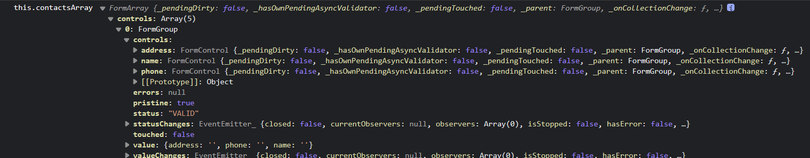

可以使用 contactsArray.controls 去循环
div *ngFor="let contact of contactsArray.controls;let i=index" [formGroupName]="i">
也可以使用 现获取.formControls 再去循环
(this.contactForm.get('contacts') as FormArray).controls as FormControl[];
div *ngFor="let contact of contactsControls;let i=index" [formGroupName]="i">
